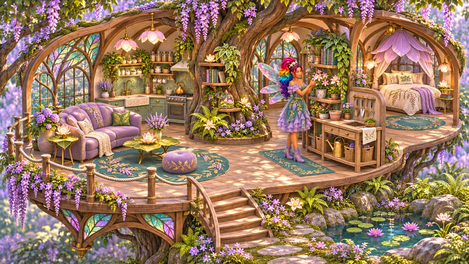

Hi, I'm JinJinJenn
I make small, cozy things for The Sims 4: mods that smooth a rough edge, add a little surprise, or make a Sim's day a bit softer. You can call me Jenn.
Most of these ideas start with something I'd like in my own game, whether it's a sweet note or a different place for a household to live. I share the mods here as they take shape, along with pictures and stories from making them.
What I care about

- Cozy games
- Kind little details
- Households, not just Sims
- Unexpected gifts
- Notes and surprises
How the mods get made
The current mods are being developed for The Sims 4 1.105. I keep a devlog about the ideas behind them, the things that went wrong and what changed along the way. If you enjoy the technical side, there’s also a post about trying changes on separate copies of saves.
A little privacy
I keep my personal life private, so this site focuses on the mods and the ideas behind them. You won't find my location or family details here.
Say hi
You can find my projects on GitHub. If you run into a problem with a mod, open an issue in its repository so I can see what happened.
